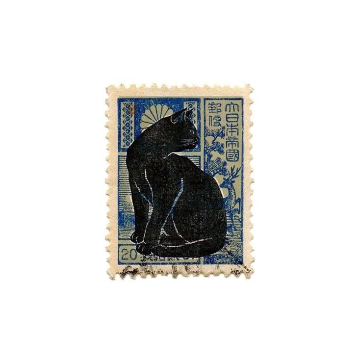

¿Tener o coleccionar?

¿Es realmente una persona que abre Amazon y compra 50 del tirón, un coleccionista de vinilos? ¿O simplemente es un tipo con 50 vinilos en su estantería?
Cuando revisé el armario de casa junto a mi padre para ver cuál podía ser el hilo musical de nuestra última cena de fin de año, me asombraba la capacidad de retención que tenía para todo lo relacionado al origen de sus CDs. Una persona con nulo talento en todo lo referente a memorizar (puedo confirmarlo, dado que, tristemente, lo he heredado), contándome acerca de lo que fue el fenómeno “Live Forever” cuando fue a Wolverhampton en el verano del 94, de cuáles de sus discos los había comprado en qué tienda de Londres o en cuál de Vigo. Tenía una historia para todos, y prácticamente toda su historia estaba en ellos: era capaz de contar amplias partes de su vida a partir de su colección de CDs: sus mudanzas, viajes, garitos frecuentados o incluso relaciones sentimentales.
Era inevitable que la relación de afinidad con este tipo de objetos se diluyera a partir del nacimiento de las grandes cadenas de “cultura” o multinacionales de comercio electrónico. Es todo más sencillo, ¿no?, ¿Quieres algo? ¿Algo llama tu atención o te genera entusiasmo? En un máximo de 36 horas lo tienes en la puerta de tu casa. Es tan cómodo como eso, y, cuestiones ético-capitalistas aparte, perfecto para todo lo utilitario o cotidiano, pero ¿se puede considerar uno coleccionista de esta forma? Comprando objetos nuevos en grandes cadenas, sin vínculo, sin valor histórico, sentimental ni simbólico, ¿estás coleccionando o estás acumulando?
Entonces, teniendo en cuenta las comodidades de las que ahora disponemos, ¿Solo se pueden crear vínculos con los objetos que poseemos pasando de ellas?¿Es complicarse la única manera de que aquello que decora nuestras habitaciones y llena nuestros muebles tenga una verdadera importancia para nosotros? No digo que debamos vivir en el siglo pasado, pero ¿Dónde está la gracia de reunir artículos de una misma categoría si los conseguimos a golpe de click?Recolectándolos de esta forma, ¿Tener más te hace mejor coleccionista? Para mí toda la importancia la tiene el camino, la búsqueda y la obsesión hasta que por fin, removiendo en algún estante de alguna tienda de algún barrio céntrico de alguna ciudad, encuentras ante tus ojos el santo grial, y lo que te relaciona a él, después de esperarlo y buscarlo activamente durante meses, va mucho más allá del vacío que hizo en tu cuenta bancaria.
Mis 12 vinilos no son, ni de cerca, mis 12 álbumes favoritos. De hecho, si hiciera un top 12 de todos los proyectos que he escuchado en mi vida, entrarían, como mucho, dos o tres de los que ahora descansan en mi estantería. Pero tengo esos 12 y no tengo otros porque esos son los 12 que me he encontrado durante la paciente búsqueda en la que me encuentro desde hace años. Y tan paciente que, habiendo visto alguno que me gustaba anunciado por ahí, no consideré la opción de comprarlo en físico hasta que, en un evento del artista, me lo ofreció en mano, se lo pagué por Bizum, me lo firmó y charlamos sobre él.
Esa es la historia que le podré contar a mi hijo cuando nos toque elegir hilo musical de la cena de algún fin de año, podré mirar todos vinilos recopilados a lo largo de mi vida y recorrerla a partir de ellos. Tal vez esta solo sea una “preocupación” pija, urbanita y carente de toda importancia real que me lleva a gastar mi dinero en acumular objetos que en realidad no necesito y una moda me ha impuesto, pero la verdad es que les tengo cariño.